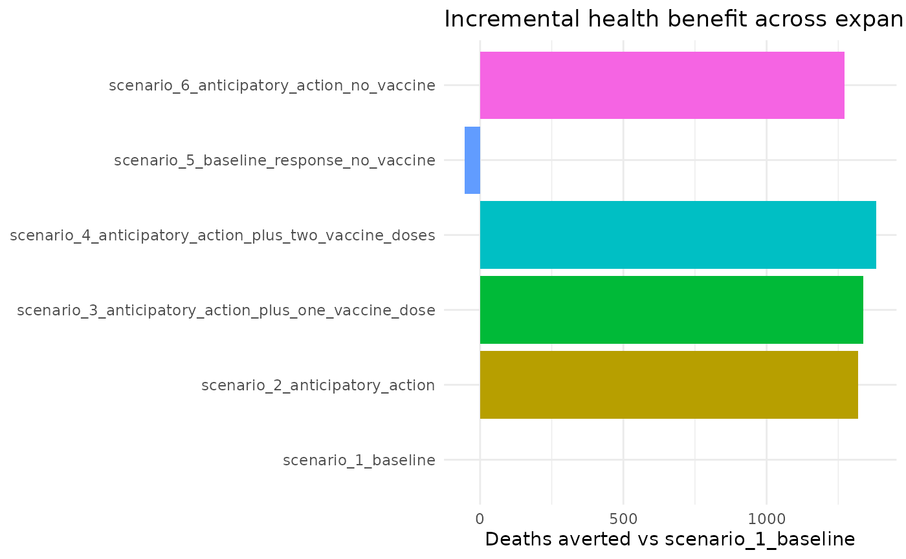
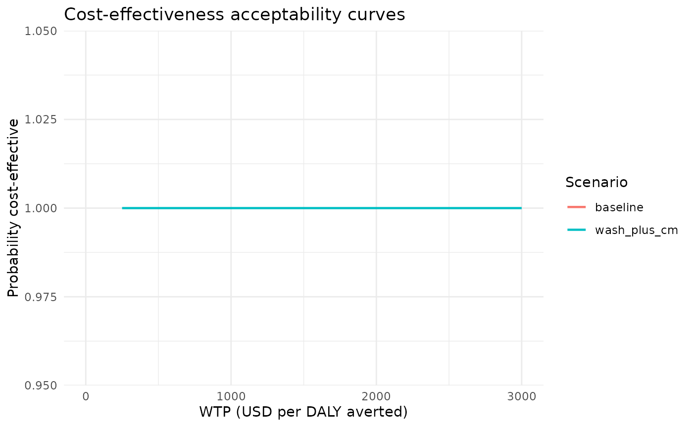
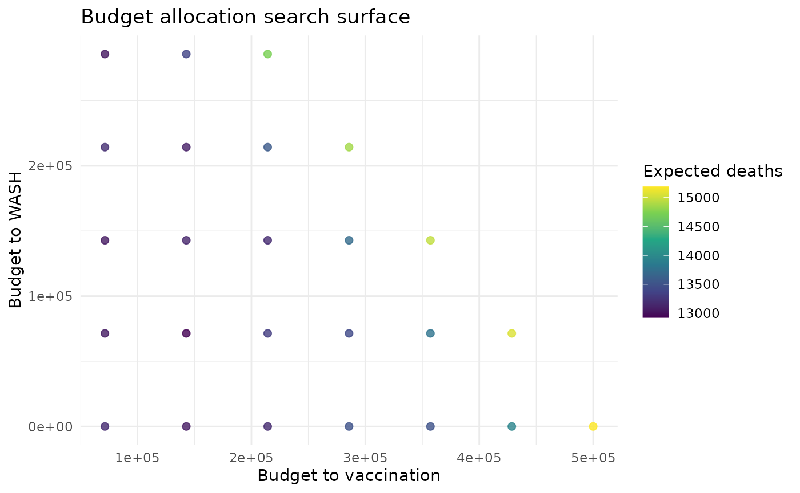

Health Economics and Optimisation
Source:vignettes/health_econ_and_optimisation.Rmd
health_econ_and_optimisation.RmdWhy This Workflow?
This vignette demonstrates how epidemiological scenario output can be translated into decision-facing economic summaries:
- Explicit assumptions and their sources.
- Incremental costs and health outcomes versus baseline.
- CE plane and CEAC visualisations.
- Constrained budget allocation search.
1) Build Scenario Runs
pars <- chlaa_parameters()
time <- 0:60
scenarios <- list(
chlaa_scenario("baseline", list()),
chlaa_scenario("wash_plus_cm", list(
chlor_start = 10, chlor_end = 60, chlor_effect = 0.2,
hyg_start = 10, hyg_end = 60, hyg_effect = 0.2,
orc_start = 10, orc_end = 60, orc_capacity = pars$orc_capacity,
ctc_start = 10, ctc_end = 60, ctc_capacity = pars$ctc_capacity
))
)
runs <- chlaa_run_scenarios(
pars,
scenarios,
time = time,
n_particles = 40,
dt = 1,
seed = 1
)2) Economics Assumptions And Source Metadata
Defaults are illustrative and should be replaced in real analyses.
econ <- chlaa_econ_defaults()
econ_sources <- chlaa_econ_sources()
head(econ_sources)
#> name
#> cost_per_vaccine_dose published
#> cost_per_orc_treatment assumption
#> cost_per_ctc_treatment assumption
#> cost_chlorination_per_person_day assumption
#> cost_hygiene_per_person_day assumption
#> cost_latrine_per_person_day assumption
#> source_type
#> cost_per_vaccine_dose Routh et al. (2017) Cost Evaluation of a Government-Conducted Oral Cholera Vaccination Campaign—Haiti
#> cost_per_orc_treatment Illustrative planning assumption for rapid scenario analysis
#> cost_per_ctc_treatment Illustrative planning assumption for rapid scenario analysis
#> cost_chlorination_per_person_day Illustrative planning assumption for rapid scenario analysis
#> cost_hygiene_per_person_day Illustrative planning assumption for rapid scenario analysis
#> cost_latrine_per_person_day Illustrative planning assumption for rapid scenario analysis
#> citation
#> cost_per_vaccine_dose 2013
#> cost_per_orc_treatment
#> cost_per_ctc_treatment
#> cost_chlorination_per_person_day
#> cost_hygiene_per_person_day
#> cost_latrine_per_person_day
#> source_url
#> cost_per_vaccine_dose https://pmc.ncbi.nlm.nih.gov/articles/PMC5676633/
#> cost_per_orc_treatment No single globally transferable unit cost; should be replaced with context-specific ORS/ORC costing.
#> cost_per_ctc_treatment No single globally transferable unit cost; should be replaced with local CTC costing.
#> cost_chlorination_per_person_day WASH package unit costs vary widely by programme design and context.
#> cost_hygiene_per_person_day WASH package unit costs vary widely by programme design and context.
#> cost_latrine_per_person_day WASH package unit costs vary widely by programme design and context.
#> notes
#> cost_per_vaccine_dose Total campaign cost per dose around USD 2.90 in Haiti 2013; default uses rounded illustrative value.
#> cost_per_orc_treatment
#> cost_per_ctc_treatment
#> cost_chlorination_per_person_day
#> cost_hygiene_per_person_day
#> cost_latrine_per_person_dayPublished and assumption entries can be filtered separately:
subset(econ_sources, source_type == "published")
#> [1] name source_type citation source_url notes
#> <0 rows> (or 0-length row.names)3) Incremental Cost-Effectiveness Results
cmp <- chlaa_compare_scenarios(
runs,
baseline = "baseline",
include_econ = TRUE,
econ = econ,
wtp = 1500
)
cmp
#> # A tibble: 2 × 21
#> scenario infections cases_symptomatic deaths doses orc_treated ctc_treated
#> <chr> <dbl> <dbl> <dbl> <dbl> <dbl> <dbl>
#> 1 baseline 566196. 138690. 15564. 0 0 0
#> 2 wash_plus_cm 528680. 124730. 10291 0 16923. 4103.
#> # ℹ 14 more variables: infections_averted <dbl>, cases_averted <dbl>,
#> # deaths_averted <dbl>, cost <dbl>, dalys <dbl>, cost_diff <dbl>,
#> # dalys_averted <dbl>, icer_cost_per_daly_averted <dbl>,
#> # icer_cost_per_death_averted <dbl>, mean_cost_vax <dbl>,
#> # mean_cost_care <dbl>, mean_cost_wash <dbl>, nmb <dbl>, inmb <dbl>
chlaa_plot_ce_plane(cmp)
4) CEAC
ceac_tbl <- chlaa_ceac(
runs,
baseline = "baseline",
wtp = seq(0, 3000, by = 250),
econ = econ
)
head(ceac_tbl)
#> # A tibble: 6 × 3
#> scenario wtp prob_best
#> <chr> <dbl> <dbl>
#> 1 baseline 0 1
#> 2 wash_plus_cm 250 1
#> 3 wash_plus_cm 500 1
#> 4 wash_plus_cm 750 1
#> 5 wash_plus_cm 1000 1
#> 6 wash_plus_cm 1250 1
ggplot(ceac_tbl, aes(x = wtp, y = prob_best, colour = scenario)) +
geom_line(linewidth = 0.8) +
labs(
x = "WTP (USD per DALY averted)",
y = "Probability cost-effective",
colour = "Scenario",
title = "Cost-effectiveness acceptability curves"
) +
theme_minimal()
5) Budget Allocation Optimisation
opt <- chlaa_optimise_budget(
pars = pars,
budget = 5e5,
time = time,
n_particles = 20,
dt = 1,
grid_size = 8,
min_fraction = list(vax = 0.1),
max_fraction = list(wash = 0.6),
max_vax_doses_per_day = 5000
)
opt$best
#> frac_vax frac_wash frac_care budget_vax budget_wash budget_care doses
#> 7 0.2857143 0.1428571 0.5714286 142857.1 71428.57 285714.3 70000
#> wash_intensity deaths cases
#> 7 0.01971313 12924.05 135429.7
ggplot(opt$evaluations, aes(x = budget_vax, y = budget_wash, colour = deaths)) +
geom_point(size = 2, alpha = 0.8) +
scale_colour_viridis_c() +
labs(
x = "Budget to vaccination",
y = "Budget to WASH",
colour = "Expected deaths",
title = "Budget allocation search surface"
) +
theme_minimal()